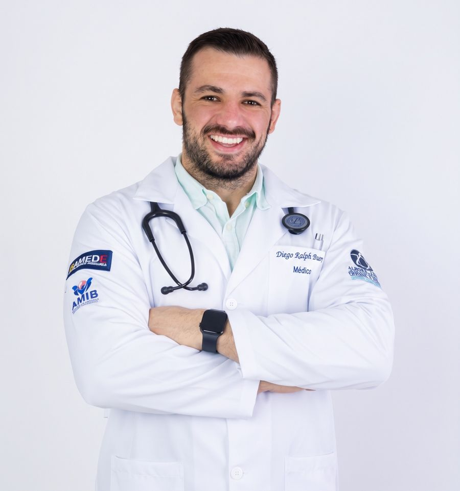
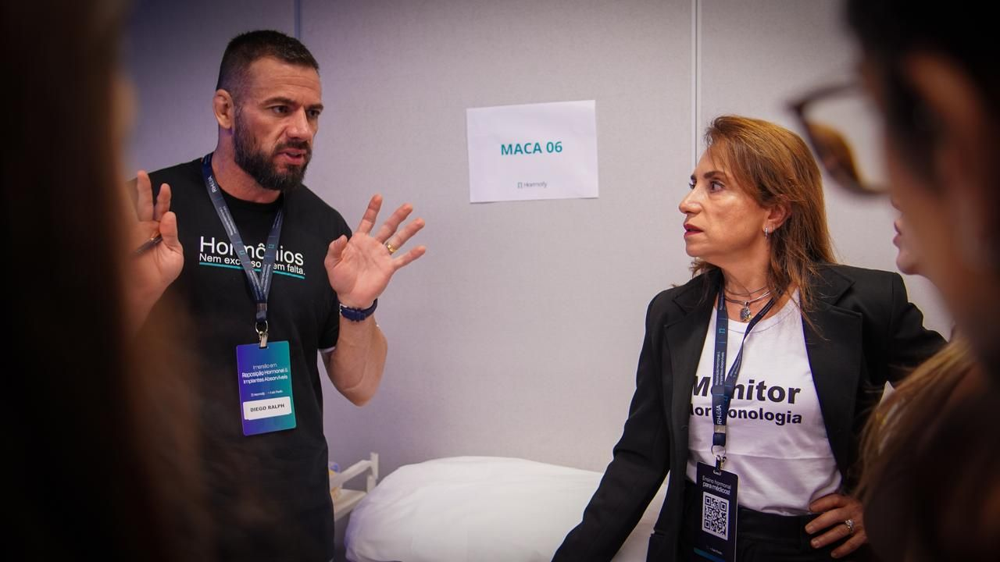
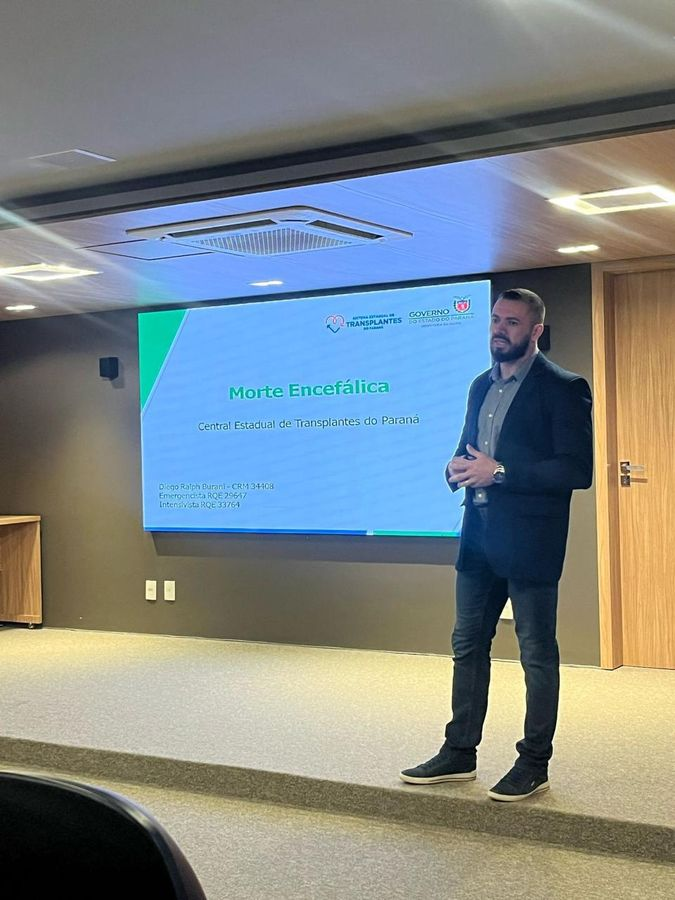
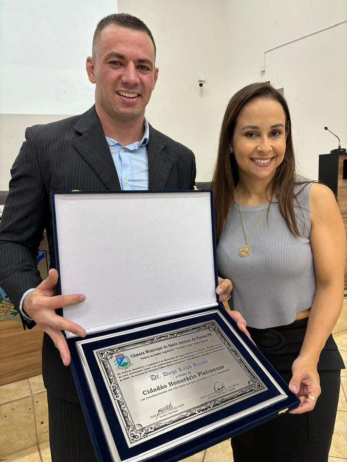
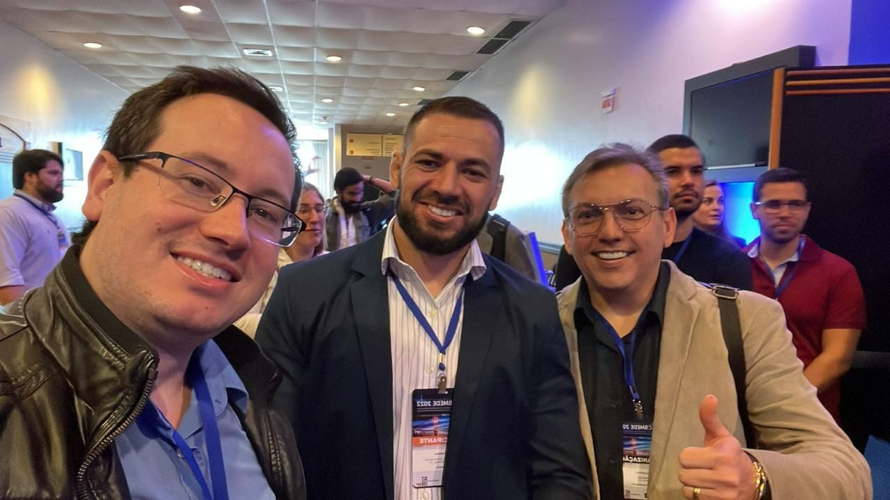
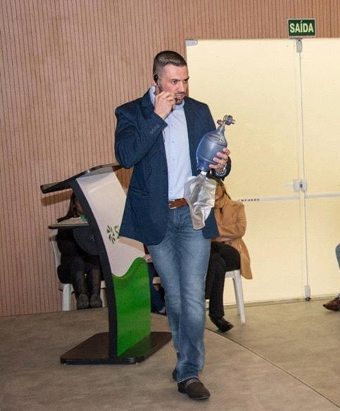
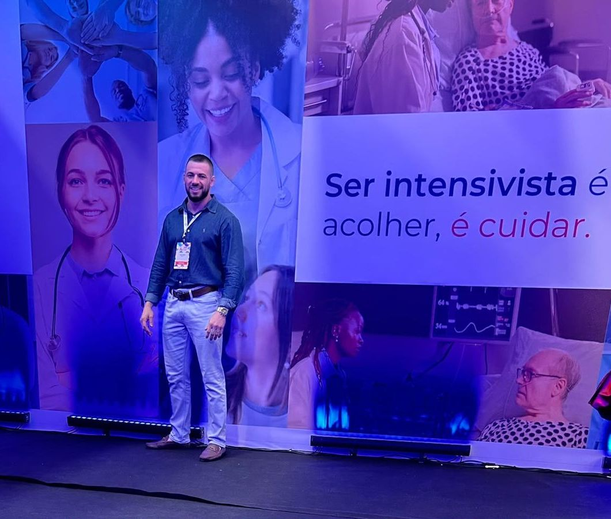
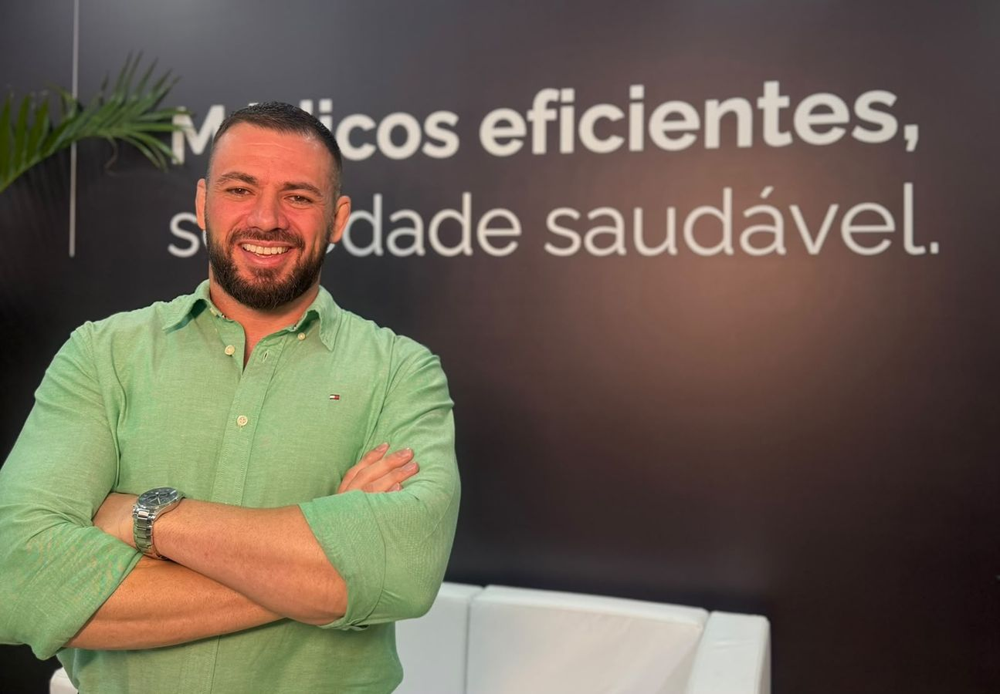
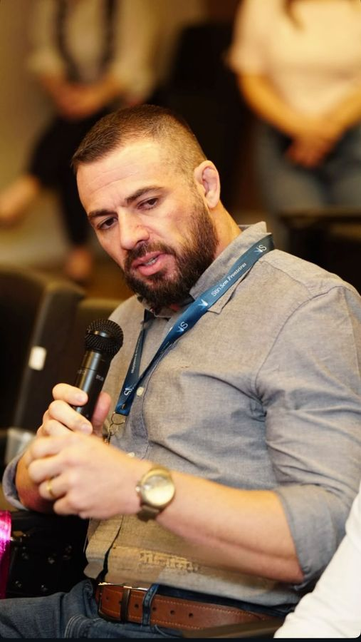

Reposição e implantes hormonais
Reposição hormonal masculina e feminina, com implantes para liberação estável e acompanhamento por exames.
Medicina preventiva, emagrecimento, reposição hormonal e ganho de massa muscular, com acompanhamento de perto.

Para quem quer emagrecer, ganhar força, equilibrar os hormônios e proteger o coração, com acompanhamento de perto.
Reposição hormonal masculina e feminina, com implantes para liberação estável e acompanhamento por exames.
Programas para perda de peso e tratamento da obesidade, com plano alimentar, medicação quando indicada e bioimpedância.
Acompanhamento para idosos e pacientes com perda de massa muscular, para recuperar força, mobilidade e autonomia.
Correção de deficiências nutricionais identificadas nos exames, com reposição oral ou injetável.
Aplicação de medicamentos e ativos por via intravenosa ou intramuscular, com prescrição individual, em sala estruturada no consultório.
Ponto de coleta de análises clínicas integrado à clínica. Você consulta e coleta no mesmo lugar.
Avaliação de saúde integrada com eletrocardiograma, Holter, MAPA e ecocardiograma. O ecocardiograma é realizado em parceria com o cardiologista da equipe.
Cuidando da sua saúde de forma Intensiva
Agendar consultaTodo tratamento segue um acompanhamento estruturado e focado em estilo de vida. A duração e a frequência dos retornos dependem de cada paciente e de cada condição.
Diagnóstico completo, exames e primeiros ajustes de alimentação, sono, exercício e tratamento.
Reavaliação com bioimpedância e exames de controle. O plano muda conforme a resposta do seu corpo.
Hábitos consolidados e check-up para manter os resultados a longo prazo.
Toda consulta tem duração mínima de 40 minutos para entender sua história completa.
Coleta, eletrocardiograma, injetáveis e ecocardiograma sem sair da clínica.
Cardiologista na equipe e parceria com ortopedia e dermatologia.
A equipe entra em contato depois da consulta para acompanhar sua evolução.

Depois de anos à frente de emergências e de uma UTI Covid, o Dr. Diego decidiu cuidar das pessoas antes que elas precisassem de um leito. Hoje seu foco é medicina preventiva, estilo de vida, performance e emagrecimento.
Da terapia intensiva ele trouxe o que mais importa no consultório: olhar clínico apurado, decisões baseadas em evidência e atenção total a cada paciente.
Fora do consultório, o Dr. Diego treina jiu-jitsu. O tatame ensina o mesmo que ele aplica no cuidado: constância, técnica e respeito ao corpo.
Fale com a equipe e escolha o melhor horário de segunda a sábado.
Avaliação completa, com coleta e exames no próprio consultório quando indicado.
Retornos em 3, 6 e 12 meses, conforme o seu caso, sempre com a equipe por perto.
Cuidando da sua saúde de forma Intensiva.
Agendar consultaPresença ativa nos principais encontros de medicina intensiva, emergência e reposição hormonal.








“Você nos trata de forma diferente.”
“Meu pai, de 72 anos, já não conseguia levantar da cadeira sozinho. Com exercício orientado, ajuste da alimentação e exames periódicos, ele voltou a caminhar até a padaria. Recuperou força e, principalmente, autonomia.”
“Eu já tinha tentado de tudo. Com o Dr. Diego entendi que obesidade é doença e precisa de tratamento. Perdi peso com acompanhamento de perto, bioimpedância a cada retorno e nenhuma promessa milagrosa.”
“Os fogachos e a insônia estavam atrapalhando meu trabalho. Na primeira consulta ele ficou mais de 40 minutos me ouvindo. Hoje durmo bem e voltei a ter disposição.”
“Fiz um check-up de rotina sem sentir nada. O eletrocardiograma mostrou uma alteração, o Holter confirmou uma arritmia e em poucos dias eu estava com o cardiologista. O diagnóstico precoce fez toda a diferença.”
“Cansaço, falta de foco e libido baixa. Os exames mostraram testosterona baixa. Com o implante e o acompanhamento, voltei a ter energia para o trabalho e para os treinos.”
“Vivia cansada e com queda de cabelo. Os exames mostraram falta de ferro e de vitamina D. Com a reposição certa, em poucos meses me senti outra pessoa.”
“Fiz a reposição de ferro na veia no próprio consultório, com a equipe do meu lado o tempo todo. Ambiente tranquilo, sem precisar ir ao hospital.”
“Consultei e coletei os exames na mesma manhã. No retorno já estava tudo pronto. Para quem trabalha o dia todo, faz muita diferença.”
 Abrir no Google Maps
Abrir no Google Maps
No mínimo 40 minutos. O tempo serve para entender sua história, revisar exames e montar um plano junto com você.
Todo tratamento tem retornos programados, geralmente em 3, 6 e 12 meses, com exames de controle e foco em estilo de vida. A duração depende de cada paciente e de cada condição.
Para homens na andropausa e mulheres na transição ou na menopausa, sempre após avaliação clínica e exames. O objetivo é saúde e qualidade de vida.
É a aplicação de medicamentos, vitaminas ou minerais pela veia, com prescrição individual e acompanhamento da equipe, em sala própria do consultório.
Sim. O ecocardiograma é realizado em parceria com o cardiologista da equipe, junto com eletrocardiograma, Holter e MAPA.
Sim. A clínica tem ponto de coleta de análises clínicas integrado, então você consulta e coleta no mesmo lugar.
Sim, a consulta atende Unimed e particular. Exames, terapias e implantes podem ter condições próprias. Confirme com a equipe ao agendar.
Agende sua consulta de no mínimo 40 minutos e saia com um plano feito para você.